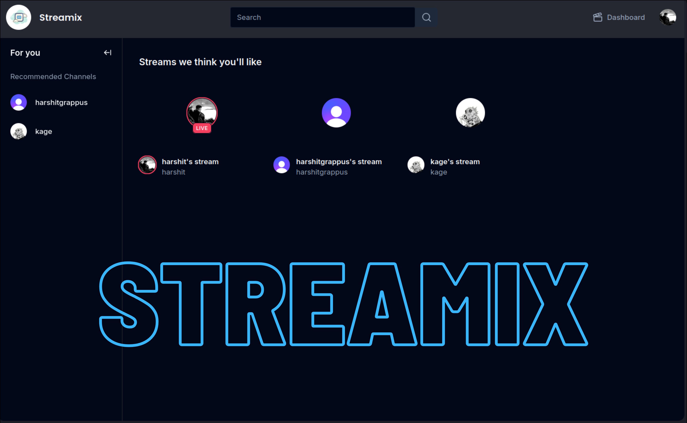

Streamix
This project is a Next.js-based live video streaming application with real-time audio and video capabilities using a miniature LiveKit for streaming services. It leverages Clerk for user management, Prisma and PostgreSQL for the database, and an RTMP server to handle live streaming. The RTMP server transcodes AAC audio to Opus and video to H264, ensuring compatibility with WebRTC for seamless communication between viewers.This can be used for any kind of media streaming like casting entire screen or specific application like a gaming stream. Utilising OBS studio host can even play a downloaded video like movies and enjoy it with others.
Why RTMP and WebRTC?
RTMP (Real-Time Messaging Protocol) is widely used for ingesting live video streams, making it perfect for delivering content in real time. WebRTC, on the other hand, is ideal for peer-to-peer communication, enabling low-latency delivery of both audio and video. Combining RTMP and WebRTC allows for efficient real-time broadcasting, with RTMP ingest and WebRTC output ensuring compatibility across browsers and devices.CLIENT
SERVER
Blog Post